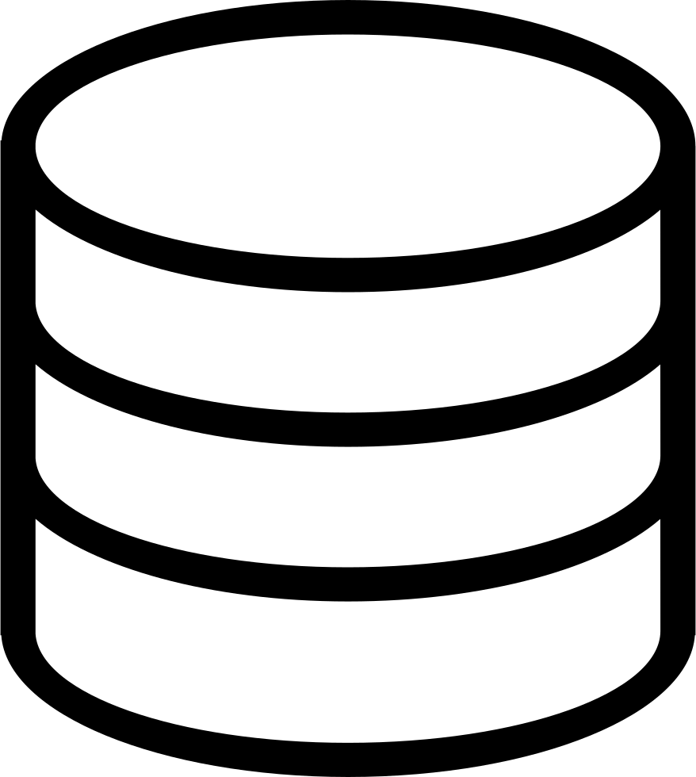
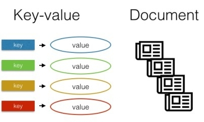
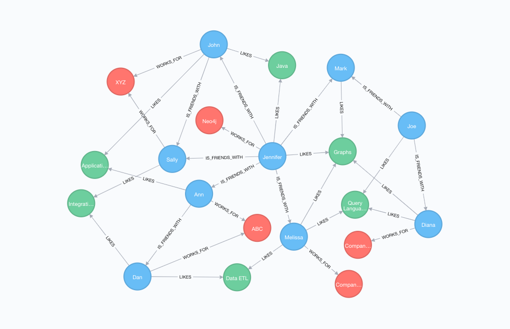
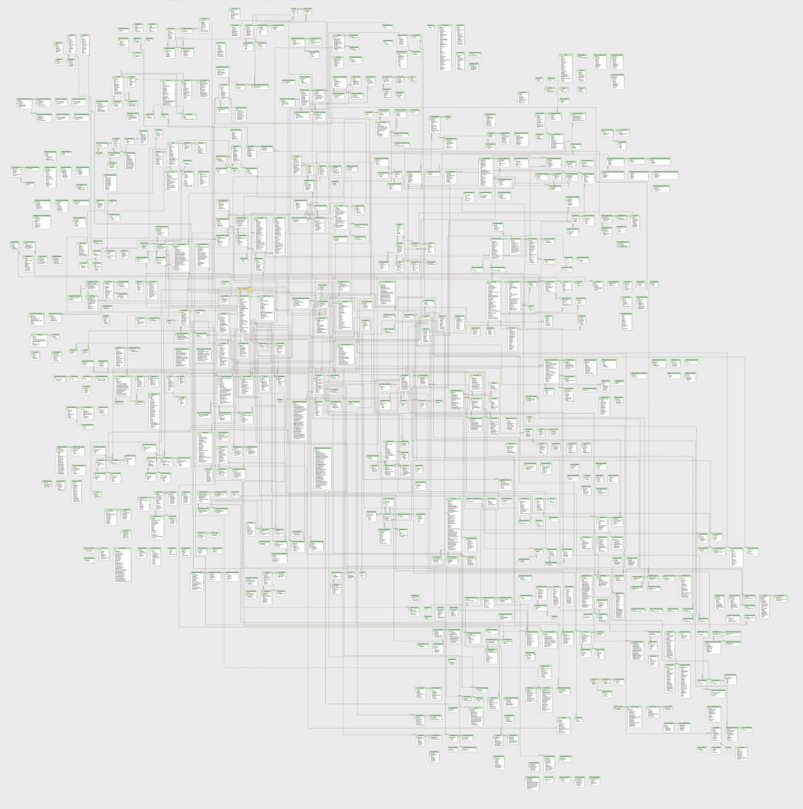
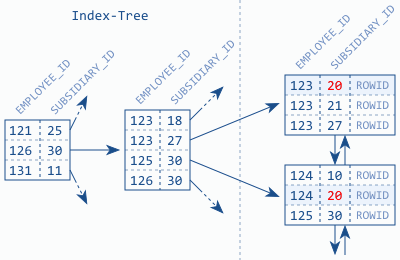
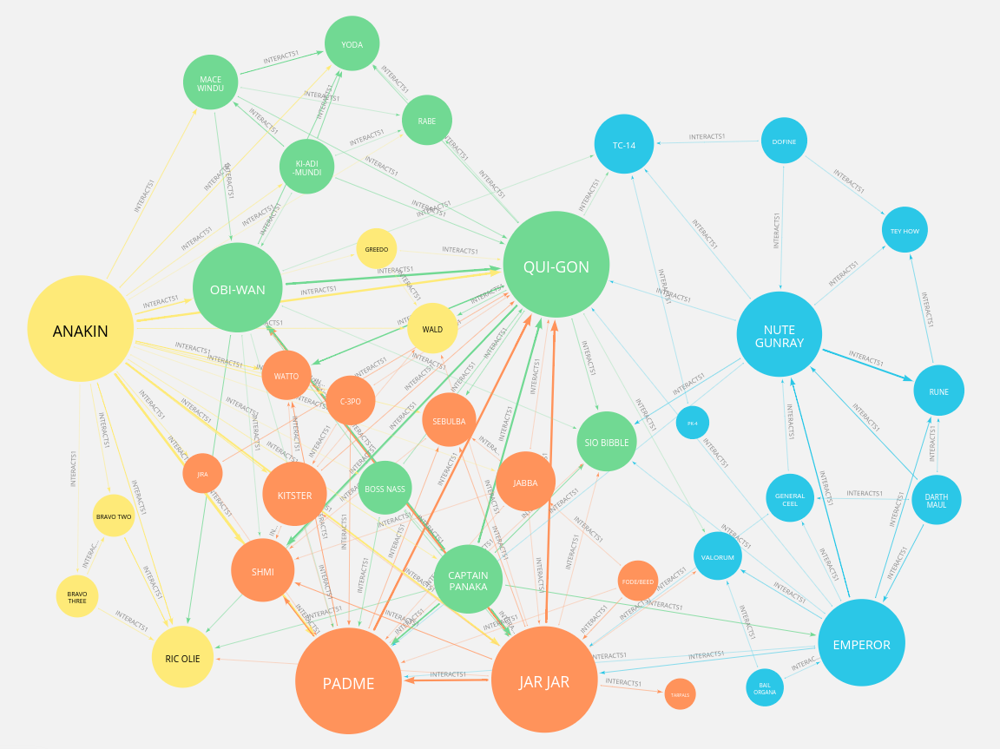
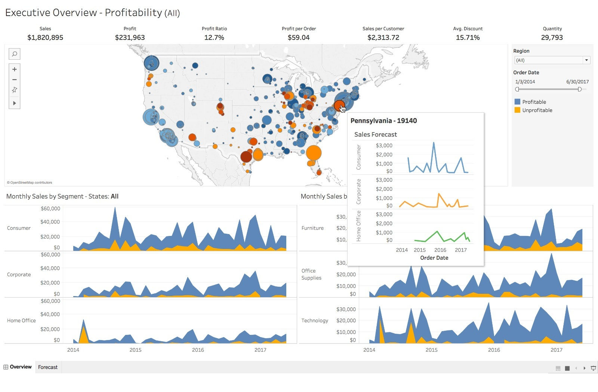

## Introduction to Databases ### Ralf Grubenmann
### What are Databases * Organized, structured collection of data * Fast access to records * Fast queries/projections <p class="fragment fade-out" data-fragment-index="1" style="position:absolute;top:50%;left:50%;"></p> <p class="fragment fade-in" data-fragment-index="1" style="position:absolute;top:50%;left:50%;"></p> <br/><br/> #### Use-cases * Help with understanding datasets * Provide easy access to (subsets of) data * Dealing with streams of data * Adding metadata to data --- ### Types of databases * Relational/SQL - Use Tables with Ids - Fixed Schemes - Strict relations - Consistency guarantees * NoSQL - Losely structured data - Large amounts of data - "Simple" structures/relations * Graph - All about relations <img src="dist/images/relational-database.png" height="200" width="300" style="position:relative;top:-8em;left:25em;" /><br> <br>  --- ### Relational Databases * store data in tables with predefined schemes and fixed data types * have fixed relations between tables * suitable for structured data * ACID guarantees - Atomicity - Consistency - Isolation - Durability <img src="dist/images/sqlite.png" width="250" style="position:relative;top:-10em;left:20em;" /> <img src="dist/images/mariadb.png" width="250" style="position:relative;top:-9em;left:20em;" /><br> <img src="dist/images/Postgresql_elephant.svg" width="200" style="position:relative;top:-10em;left:20em" /> Note: A: Succeed or rollback, C: One valid state to another, I: concurrency, D: permanent, even on system failure Some NoSQL also have (limited) ACID support -- ### Tables * Basic store of data. Simple lists of entries as rows and values in columns * Think pandas DataFrame * Usually have one (or more...) columns as primary key - Unique identifier of a record, int or UUID * Fast lookup and writes. * Can be filtered, projected etc. (Basically Excel) <img src="dist/images/pgadmin_tables.png" width="600" style="position:relative;top:-6em;left:20em;" /> -- ### Relationships * Define how table are related to each other * Consist of matching ids in tables * can be 1:1, 1:n or n:n * Can add constraints to restrict what is/isn't allows <p class="fragment fade-out" data-fragment-index="1" style="position:relative;top:-4em;left:22em;"><img src="dist/images/simple_db_diagram.png" width="600" /></p> <p class="fragment fade-in" data-fragment-index="1" style="position:relative;top:-14em;left:22em;"></p> -- ### Indices * Use for fast querying/lookup on columns * Can make a HUGE difference for performance * Internally uses B-Trees pointing to paged data  -- ### SQL (Structured Query Language) * Used for interaction with the database * Mostly the same across SQL DB implementations * Easy to learn but the devil is in the details <pre><code data-line-numbers="1|2|3"> SELECT * FROM users WHERE id=5; </code></pre> <pre><code data-line-numbers="|1|2|3-4|5" data-noescape> INSERT INTO users (Name, Surname, Email) VALUES ("Frank", "Doe", "john.doe@example.com"), ("Sue", "Doe", "sue.doe@example.com") RETURNING *; </code></pre> <pre><code data-line-numbers="|1|2|3"> UPDATE users SET name="John" WHERE id=5; </code></pre> <pre><code data-line-numbers="|1|2"> DELETE FROM users WHERE id=5; </code></pre> <pre><code data-line-numbers="|1-2|3|4"> SELECT u.Name, u.Email FROM users u INNER JOIN addresses a ON a.user_id = u.id WHERE a.ZipCode = 8001 </code></pre> --- ### NoSQL Databases * Don't use a fixed schema and relationships * Very simple to use, but easy to shoot yourself in the foot * Easy to scale (especially reads), at the cost of consistency * Likely better suited for "quick & dirty" prototyping <img src="dist/images/1200px-Redis_Logo.svg.png" width="250" style="position:relative;top:-2em;left:20em;" /> <br> <img src="dist/images/MongoDB_Logo_FullColorBlack_RGB-4td3yuxzjs.png" width="200" style="position:relative;top:-1em;left:20em" /> -- ### Key-Value stores * Basically a giant python dictionary * Keys are usually arbitrary strings * Values can be simple types like strings or complex types (lists/sets/maps) * Queries mostly limited to keys/ranges of keys and wildcards\ (e.g. <b>user:1:name</b> or <b>user.1.*</b> or <b>user-*</b>) <pre><code>> SET mykey myvalue OK > GET mykey "myvalue" > DEL mykey (integer) 1 </code></pre> -- ### Document Stores * Organized around "Documents" as basic data structure. \ Can be JSON, YAML, XML etc. * Each document gets a unique key, but can contain nested * No structure enforced on documents (Sometimes schema validation is supported) * Support key lookups and usually matching the content of documents <pre><code>"user:15": { "name": "John Doe", "email": "john.doe@example.com", "address": { "street": "Universitätstrasse 25", "zipcode": 8006, "city": "Zürich" }, "projects": [ 1, 2, 3, 5, 8, 13 ] } </code></pre> --- ### Graph Databases * Have nodes (documents) and edges (relations) * Relations can be dynamic and don't need to be predefined * Relations can be directional * (Usually) relations can also have properties/values * Allow efficient path traversals <br> <img src="dist/images/neo4j_logo-facebook.png" width="250" style="position:relative;top:-9.3em;left:0em;" /> -- ### Example * Find friends of friends of user 5 that are 1 to 5 "friend of" edges removed SQL: <pre><code>SELECT u.id FROM user u JOIN user u2 ON u2.friend_id=u.id JOIN user u3 ON u3.friend_id=u2.id JOIN user u4 ON u4.friend_id=u3.id JOIN user u5 ON u5.friend_id=u4.id WHERE u2.id=5 or u3.id=5 or u4.id=5 or u5.id=5 </code></pre> Neo4J: <pre><code>MATCH (user:User { id: 5})-[:FRIEND_OF*1..5]-(friend:User) RETURN friend.id </code></pre> --- ### Why use a DB and how to pick one * Easily explore and analyze data on the fly - e.g. with software like Tableau * Deal with large amounts of data (and subsets of it) efficiently * Deal with online data * You were forced to use it  -- ### CAP Theorem Choose two: * Consistency - All instances have the same data * Availability - Always get a non-error response (maybe with outdated data) * Partition Tolerance - Network partitions don't matter <img src="dist/images/cap-theorem.png" width="300" style="position:relative;top:-2em;left:20em;" /> -- ### SQL Databases * Structured, hierarchical data * Structure of data rarely changes * (Fixed) Relations and subsets of data joined by them matter E.g. * Accounting software * Product databases * Most enterprise software -- ### NoSQL * Real-time analytics, large volume of simple data * Structure of data is likely to change * Relations don't matter or clear parent - child relations * Large amounts of text in single fields * Polish CV / Want to be cool E.g. * Online sensor data * Big data (like simulation results) * High availability* * Genomics data -- ### Graph Databases * Many relations between entries * Sparse relations (Not everyone has friends 😢 ) * Qualified relations * Path queries matter - You're interested in how to get from A to B, less what A and B are E.g. * Friends of Friends networks/Social networks * Recommender systems * Symbolic reasoning * Renku (Knowledge graphs) --- ### Questions? <pre class="sql" style="width:60%;margin:300px 40px 40px;font-size:0.8em;"><code>SELECT a.name, q.text FROM Audience a RIGHT JOIN Question q ON q.audience_member_id=a.id WHERE q.answered = FALSE</code></pre>